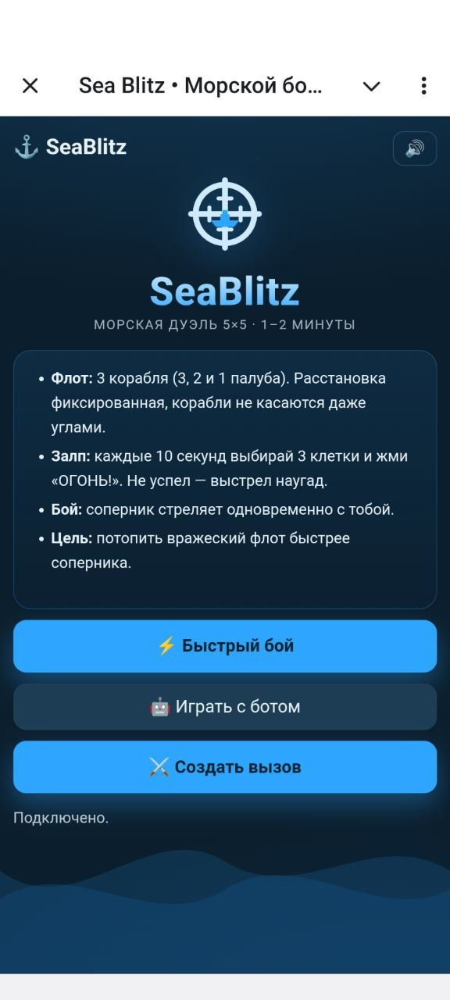
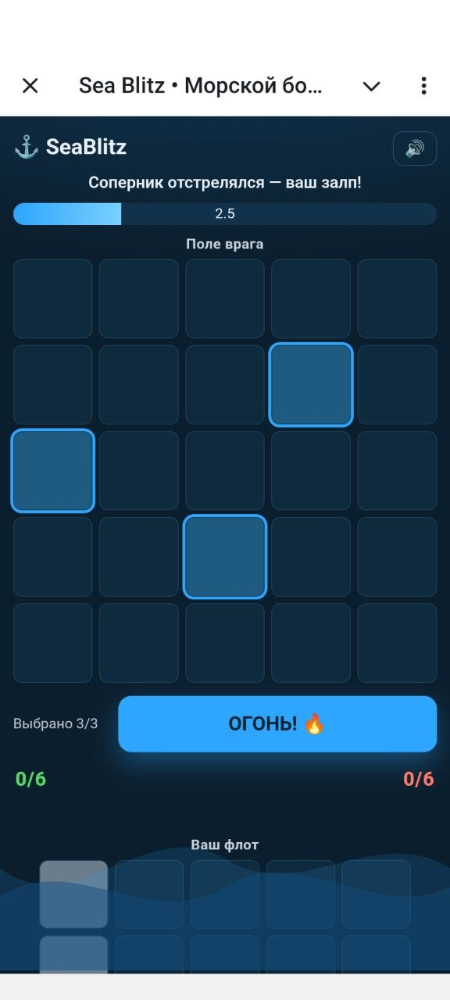
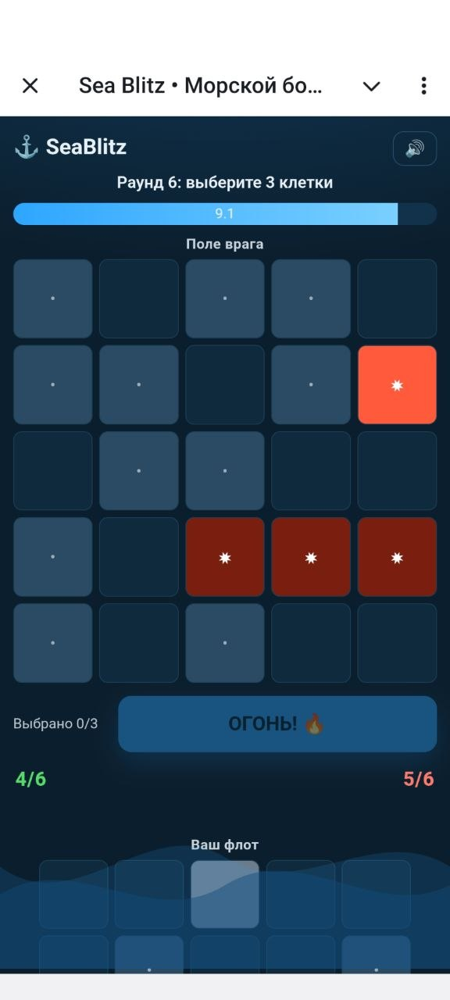
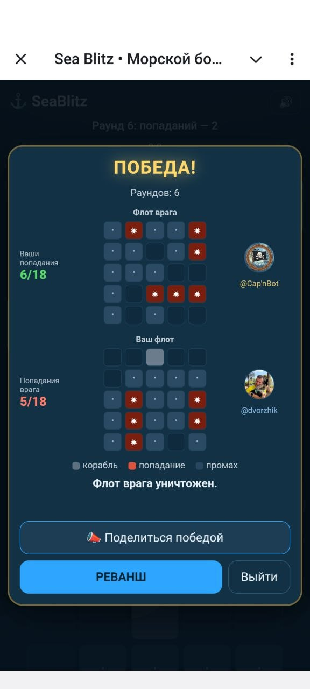

Классический «Морской бой» в школьной тетрадке помнят все: вырванный из середины листок в клетку, старательно нарисованные координаты «А-Б-В...», четырехпалубный линкор у самого края и двадцать минут унылой переклички: «Б-4? Мимо. В-7? Мимо. А куда ты стрелял три хода назад?». В детстве на уроке географии это казалось увлекательным, но современный ритм жизни вынес этой медитации приговор.
Сегодня мир живет на бегу. Поездка в метро, очередь за эспрессо, перерыв между созвонами — у нас физически нет пятнадцати минут на расстановку торпедных катеров и позиционную войну в пустой воде. Современные казуальные игры требуют совсем другой скорости: мгновенный вход, чистый концентрат дофамина, финал за одну минуту и ноль утомительного ожидания.
Именно из этой идеи родился SeaBlitz — морской бой, разогнанный до скорости современного мессенджера.
Чем SeaBlitz отличается от дедушкиного морского боя
Компактная арена 5×5 вместо 10×10: Здесь нет бескрайних морских просторов, где можно полчаса гонять чаек. Поле 5×5 — это тесная гавань на 25 клеток, где спрятано всего три корабля: трехпалубный флагман, двухпалубный корвет и юркий однопалубный катер (суммарно 6 клеток). Правило старой школы сохранено: корабли не касаются друг друга даже углами.
Ноль рутины с расстановкой: Больше не нужно мучительно думать, куда приткнуть лодку, пока соперник прикрывает свой листок пеналом. Сервер генерирует честную расстановку за сотую долю секунды. Открыл — и ты уже в бою.
Одновременные залпы тройками (Simultaneous Volleys): Главный тормоз классики — ожидание хода противника, пока тот разглядывает потолок. В SeaBlitz ходов по очереди нет. Таймер отсчитывает 10 секунд, за которые оба адмирала выбирают сразу по 3 клетки на чужом поле и жмут кнопку «ОГОНЬ!».
Зазевался — получил залп наугад: Если в пылу раздумий адмирал отвлекся на баристу или переписку и не успел нажать кнопку, бортовой компьютер не ждет: недостающие выстрелы гремят в случайные координаты. Динамика не провисает ни на секунду.
Партия ровно на 40 секунд: При такой плотности огня и компактной акватории случайных выстрелов в молоко почти не бывает. Четыре-пять раундов — и чей-то флот уже булькает на дне. Это идеальный формат микро-дуэли: проиграл — жми реванш, выиграл — гордись победой.
Почему это затягивает в Telegram
SeaBlitz задуман не как громоздкое приложение, которое нужно ставить из стора, а как инструмент быстрого спора прямо в Telegram Mini App.
Нужно решить в рабочем чате, кто сегодня идет за пиццей? Скидывается инлайн-вызов: @seablitz_bot дуэль. Соперник жмет одну кнопку, у обоих прямо в чате раскрывается неоновый тактический радар, сорок секунд одновременной пальбы, виброотклик от попаданий — и вопрос закрыт без споров в переписке.
А если живой оппонент пошел пить кофе, на боевом мостике всегда дежурит 🏴☠️ Капитан Бот — железный корсар, который не знает пощады, бьет без промаха и никогда не просит тайм-аут.
Скриншоты

Стартовый экран: правила на одном слайде и три режима — быстрый бой, игра с ботом, вызов другу

Залп: отсчёт 10 секунд, три клетки на поле врага и кнопка «ОГОНЬ!»

Раунд 6: попадания — звёздочками, промахи — точками, счёт обоих флотов виден сразу

Победа: статистика попаданий, кнопка «Реванш» и возможность поделиться результатом
«Сказка по рисунку»: как спасти вечер усталого родителя и не обидеть синего дракона.
Каждый родитель знаком с ситуацией: вечер, 21:00, запас сил равен заряду батареи на 2%, а чадо приносит альбомный лист с чем-то фиолетовым, шестиногим и подозрительно зубастым.
— «Это Бублик, он добрый, расскажи про него сказку на ночь!»
В этот момент мозг взрослого судорожно пытается связать законы физики, Бублика и желание просто доползти до подушки. Именно для таких спасательных операций и был создан сервис DrawStory.
Что это такое?
DrawStory — это веб-сервис, который берёт детские рисунки любого уровня экспрессионизма (от шедевров будущих художников до классических «палка-палка-огуречик») и за 1–2 минуты превращает их в готовую персональную аудиосказку со звуковым сопровождением и книжной обложкой.
Как устроен процесс: пошаговая магия
Фотографируем шедевр 📸 — загружаете фото или скан наброска (подходят JPG, PNG, WEBP). Мультимодальная нейросеть бережно изучает лист: она видит не просто пятна гуаши, а подмечает характерные ушки, форму хвоста, кривой бантик на шее и даже подозрительное облачко на заднем плане. Если на рисунке изображён концептуальный авангард, в котором даже автор путается, родитель может черкнуть короткую подсказку — ИИ всё учтёт.
Задаём параметры героя 👧👦 — указываете имя и возраст слушателя, а также тип истории: сказка на ночь, спокойная история перед дневным сном или приключение. Под возраст подстраивается словарный запас, сложность сюжета и длина предложений.
Выбираем голос чтеца (и главная фишка сервиса) 🎙️ — можно выбрать готовый дикторский голос, а можно один раз надиктовать 30–60 секунд спокойного текста и клонировать свой собственный. Юмор ситуации: ваш голос будет звучать идеально ласково, ровно и терпеливо — даже если в реальности вы в этот момент моете посуду, находитесь на дежурстве или физически не способны говорить связными предложениями.
Генерация и саунд-дизайн 🎵 — примерно за минуту система:
сочиняет добрый сюжет, где нарисованный персонаж узнаётся с первых секунд;
озвучивает его выбранным тембром;
накладывает мягкий фоновый эмбиент (музыка автоматически притихает, пока звучит голос, и убаюкивает к финалу);
рендерит яркую цифровую книжную обложку «по мотивам рисунка».
Плеер, текст и кнопка для бабушек 🎉 — сказку можно сразу включить в веб-плеере, почитать глазами как текст или отправить ссылку родственникам в WhatsApp/Telegram. Бабушки приходят в восторг от обложки, ребёнок горд тем, что его монстрик стал звездой эфира, а в детской комнате наконец-то наступает тишина.
Почему это заходит детям и взрослым?
Ритуал без экранов: ребёнок не залипает в мелькающие мультики перед сном, а слушает мягкую историю, в которой герой плавно зевает, складывает крылья и ложится спать вместе с ним.
Личное признание: для малыша это чистый восторг — его каракули не просто похвалили дежурным «молодец», они ожили в настоящей сказке.
Бережёт нервы: минус одна вечерняя родительская повинность, плюс 10 минут тишины.
Примеры сказок
Послушать, как это звучит вживую, можно на готовых примерах — с плеером, текстом и книжной обложкой: